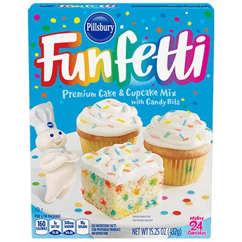
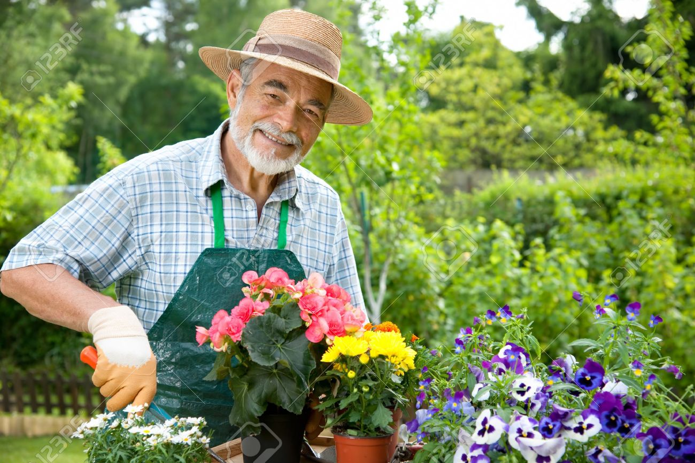

Hi, my name is Cailey Murad. I live in San Carlos, California and will be a junior at Notre Dame High School Belmont. Currently, I am taking a Summer Intership Program called Girls Who Code . Girls Who Code was created in 2012 as a way of encouraging more girls to get involved in computer science. So far, I have learned a lot about comptuer science and am exited to learn even more.
I have many hobbies. Some of my favorite hobbies include: baking and gardening.
I started baking when I was about tweleve. I had made the Pillsbury Funfetti Cake and it was AMAZING!

I would definitely say that the Pillsbury Funfetti Cake and the Pillsbury Dough Boy caused me to take up a hobby in baking. Now, I always bake cakes and other desserts for my friends and family.
I have always loved gardening ever since I was little. I liked how you could take care of something and watch it grow. Recently, I made a garden bed and am growing cucumber, peppers, corn, lettuce, etc.
 (click on image)
The man in the stock images represents me when I am gardening.
This is a time-lapse video of a bean plant growing over the span of 25 days. Sometimes, I like to watch it on my free time .